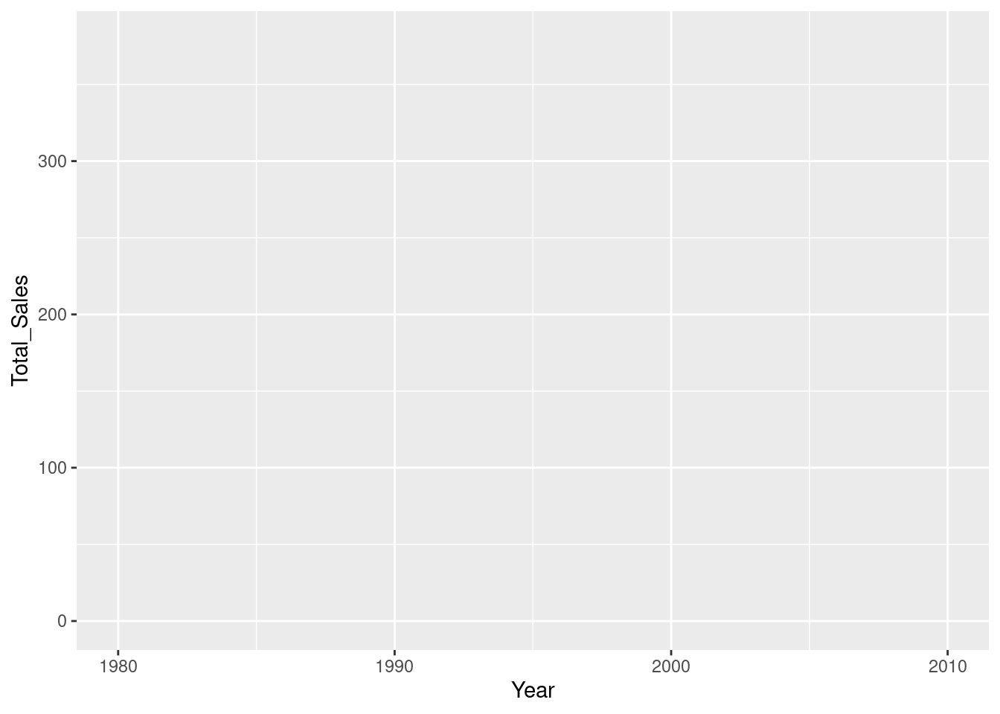
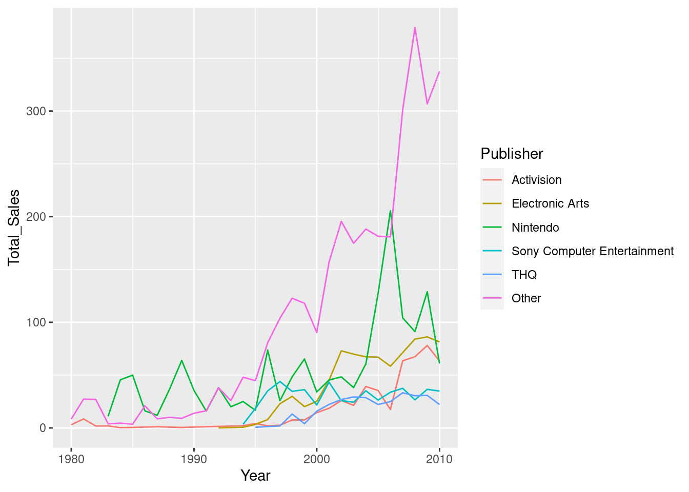
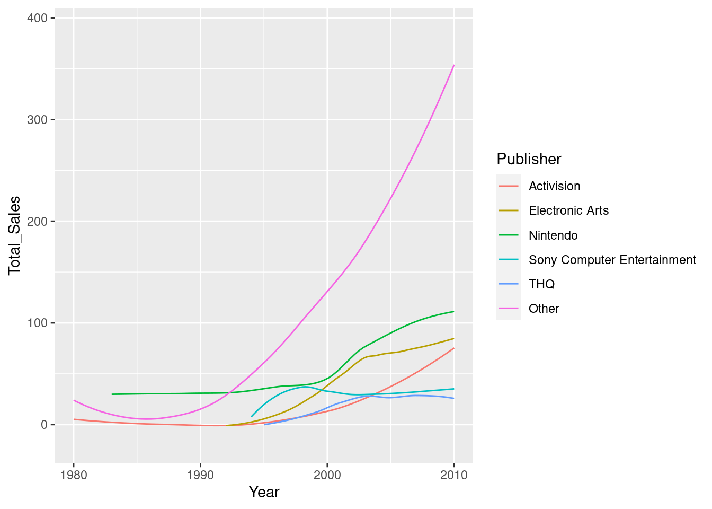
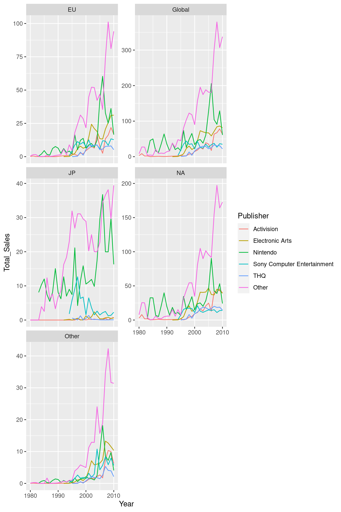
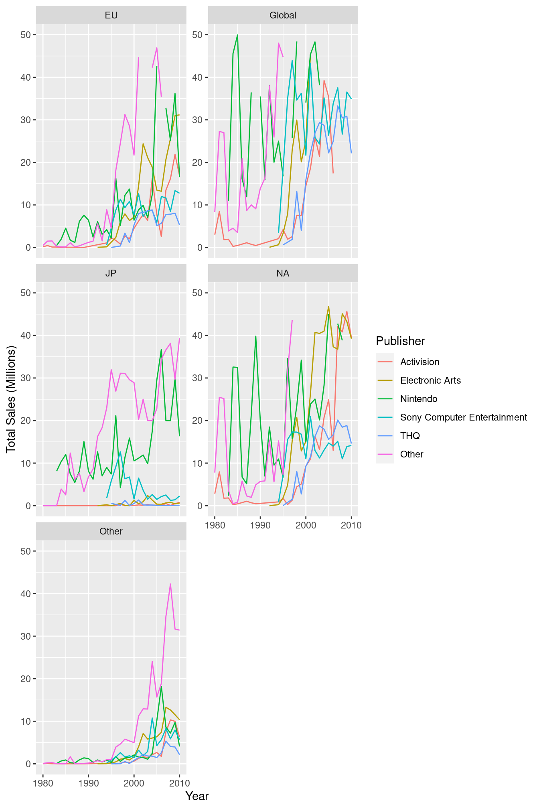
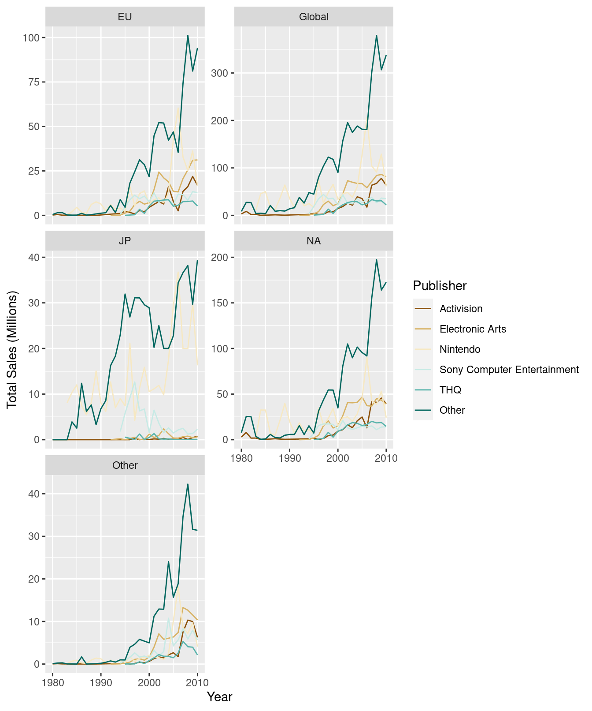

13 Plotting
Now that you’ve got your data summarised to a suitable level, you might want to create some graphics to help gain insight into the trends and patterns in the data. For this section, we’re going to rely on the {ggplot2} package from the tidyverse. This is arguably the most advanced plotting package available for R. R does provide plotting functions without the use of packages, but we’re going to focus on {ggplot2} here.
13.1 ggplot2
{ggplot2} is based on the concept of a Grammar of Graphics. This is the concept that, like language, graphics have a grammar that allow us to describe their components.
This concept was originally proposed by Leland Wilkinson, but has been adopted heavily in the {ggplot2} philosophy, with Hadley Wickham publishing a paper titled ‘A Layered Grammer of Graphics’ that outlines his proposal for a layered grammar and how it’s implemented in {ggplot2}. We’ll cover the real basics of {ggplot2} here but I’d recommend reading the paper and reading the {ggplot2} documentation if you’re interested in gaining a deeper understanding.
13.1.1 Components
At the core of the Grammar of Graphics philosophy is the idea that plots are defined by their components. For example, two scatterplots could be extremely different, even though we’d both call them scatterplots. Instead, the two graphics are better defined by the components that make them up.
When we create a plot using {ggplot2} we build it up by creating and combining these components.
The main components that make up a plot are:
- Data and aesthetics mappings
- Geometrics objects (or geoms)
- Statistical transformations (or stats)
- Scales
- Facets
These sound really scary, but they’re actually super simple. Let’s look at each one.
13.1.1.1 Data and aesthetic mappings
Every plot is a representation of some data. Therefore, to have a graphic, you need some data. That’s simple enough.
But which parts of the data should be shown on the plot and where? This is what our aesthetic mappings represent. We might have a dataset with two variables, z and w. Our mapping may be then that we want the z variable on the x axis of the plot, and the w variable on the y axis. We can also utilise other mappings like colour and size.
To define our dataset and our aesthetic mappings using {ggplot2}, we use the ggplot() and aes() functions. Let’s see an example using our video game sales experiment from the previous chapters:
library(ggplot2)
# Here we lump together any publisher not in the top 5 by total sales
# otherwise we'll have too many publishers
plot_vg_sales <- tidy_vg_sales %>%
dplyr::group_by(Publisher, Year, Country) %>%
dplyr::summarise(Total_Sales = sum(Sales), .groups = "drop") %>%
dplyr::mutate(Publisher = forcats::fct_lump_n(Publisher, n = 5, w = Total_Sales)) %>%
dplyr::group_by(Publisher, Year, Country) %>%
dplyr::summarise(Total_Sales = sum(Total_Sales), .groups = "drop")
plot_vg_sales %>%
# Just plot global sales for now
dplyr::filter(Country == "Global") %>%
ggplot(mapping = aes(x = Year, y = Total_Sales, colour = Publisher))
Here we’ve defined that we want to show the Year on the X axis, the Total_Sales on the Y, and we want to map the Publisher to the colour of whatever we show on the plot.
As part of our mapping, we can see that {ggplot2} has also provided appropriate scales for our variables. It’s provided a numeric scale with an appropriate range for the X and Y axis. We can’t see it yet, but it’s also assigned a scale to our colour aesthetic, mapping colours to values in the Publisher column. We’ll look at manually specifying and customising the scales later.
Although we’ve got our scales, and we can see that {ggplot2} clearly knows which variable we want on each axis, but there’s nothing on the graph at the moment… This is because we now need to define our geoms.
13.1.1.2 Geometric objects (geoms)
Our geometric objects will be the object that’s actually shown on the plot (e.g. bars, points, lines, and so on). To add our geometric object, we use the geom_... functions. Our geom will then inherit the mapping from our ggplot() call. If we wanted to add additional mappings, the geom_... functions also allow for a mapping parameter where additional mappings can be provided.
We want lines for our example, so we use the geom_line() function. To add our geom component, we just need to add it to our plot so far using the + operator:
plot_vg_sales %>%
dplyr::filter(Country == "Global") %>%
ggplot(mapping = aes(x = Year, y = Total_Sales, colour = Publisher)) +
geom_line()
This is equivalent to:
plot_vg_sales %>%
dplyr::filter(Country == "Global") %>%
ggplot() +
geom_line(mapping = aes(x = Year, y = Total_Sales, colour = Publisher))Different geoms also allow for different mappings. For example, the line geom allows you to specify the linetype aesthetic that changes the way the line is drawn (solid, dashed, etc.) depending on the value of your variable. This aesthetic would mean nothing for the point geom however, which instead has an aesthetic called shape. To see which aesthetics are supported by which geoms, look at the documentation for the geom function you want to use (e.g ?geom_line).
13.1.1.3 Statistical transformations (stats)
Before the data is plotted, it can go through a statistical transformation or ‘stat’. This will take the value or values from the dataset and transform them. For example, we might want to plot the sum of all of the values in a group rather than each value individually. We could use a statistical transformation that sums up all the values to do this for us. That way, we can plot the data in different ways with the same base dataset.
We can see that when we call geom_line() the default value for the stat parameter is ‘identity’. This means that {ggplot2} performs no stat transformation on the data before it plots it - if the value of the variable on the x axis is 10, then the value that’s plotted will be 10.
There are many predefined stats that {ggplot2} provides that we can to plot the data in different ways. To change the stat transformation for a geom, we can change the stat parameter to one of a set of predefined character strings that represent certain stats. For example, if we set the stat parameter for our geom_line() to 'smooth', the values are transformed by a smoothing function (the smoothing method can be changed via the method parameter):
plot_vg_sales %>%
dplyr::filter(Country == "Global") %>%
ggplot(mapping = aes(x = Year, y = Total_Sales, colour = Publisher)) +
geom_line(stat = "smooth")## `geom_smooth()` using method = 'loess' and formula 'y ~ x'
Some geoms use a stat different to ‘identity’ by default. For example, using geom_smooth() uses the ‘smooth’ stat to essentially do the same as we just did with geom_line(). Similary, geom_boxplot() will automatically calculate the median and the whiskers and hinges from your data via the "boxplot" stat.
Stats are particularly useful because they allow us to plot the same data at different levels of summary. If we didn’t utilise stats, we would have to transform the dataset before we started plotting. When we look at layers in one of the coming sections, this should help demonstrate the power of stat transformations in building meaningful graphics.
13.1.1.4 Facets
In our example, we’ve filtered the dataset down to just show the global sales, but instead we could also use faceting to show the data for each region in a different subplot. Faceting splits the original dataset, plots the data separately and then combines it into a single panel. To facet our plot, we use the facet_wrap() or facet_grid() functions:
ggplot(plot_vg_sales, mapping = aes(x = Year, y = Total_Sales, colour = Publisher)) +
geom_line() +
facet_wrap(~Country, scales = "free_y", ncol = 2)
We use the ~ shorthand to say that we want to use the Publisher variable. We could also use the dplyr::vars() function (i.e. facet_wrap(dplyr::vars(Publisher))). Then we specify that we want each subplot to have a free Y axis (rather than all using the same scale range) with scales = "free_y", and that we want to have 2 columns of subplots with ncol = 2.
13.1.1.5 Scales
Scales are the domains of our mappings. Each variable that we map via aes will have a scale associated with it. For example, when we map our Year variable to the x axis, {ggplot2} creates an automatic numeric scale, with values between 1980 and 2020 (the minimum and maximum values in our range). Similarly, when we map the Publisher to the colour aesthetic, {ggplot2} automatically creates a colour scale, mapping colours to specific Publishers.
{ggplot2} will create default scales for the variables in our mapping, but we can alter them manually. To do so, we just use the accompanying scale_{aesthetic}_{type} function. So for our x axis, we’re scaling our x mapping and we want a continuous, numeric scale so we would use the scale_x_continous() function. Similarly, for our y axis we’d use scale_y_continuous():
ggplot(plot_vg_sales, mapping = aes(x = Year, y = Total_Sales)) +
geom_line(mapping = aes(colour = Publisher)) +
scale_x_continuous(name = "Year") +
# Let's change the limits of our scale
scale_y_continuous(name = "Total Sales (Millions)", limits = c(0,50)) +
facet_wrap(~Country, scales = "free_y", ncol = 2)
To change the colour scale, we would use the scale_colour_brewer/hue() function. These two functions take a slightly different approach in how they assign colours to the levels of the variable.
ggplot(plot_vg_sales, mapping = aes(x = Year, y = Total_Sales)) +
geom_line(mapping = aes(colour = Publisher)) +
scale_x_continuous(name = "Year") +
scale_y_continuous(name = "Total Sales (Millions)") +
scale_colour_brewer(name = "Publisher", palette = "BrBG") +
facet_wrap(~Country, scales = "free_y", ncol = 2)
ggplot(plot_vg_sales, mapping = aes(x = Year, y = Total_Sales)) +
geom_line(mapping = aes(colour = Publisher)) +
scale_x_continuous(name = "Year") +
scale_y_continuous(name = "Total Sales (Millions)") +
scale_colour_hue(name = "Publisher", l = 40, c = 30) +
facet_wrap(~Country, scales = "free_y", ncol = 2)
13.1.2 Layers
Together, the data, mapping, stat and geom components form a layer. A plot can be made up of multiple layers. For example, let’s show the same data but overlay a regression line that uses the smooth stat and a different mapping:
ggplot(plot_vg_sales, mapping = aes(x = Year, y = Total_Sales)) +
geom_line(mapping = aes(colour = Publisher)) +
geom_smooth(method = "loess", formula = y ~ x) +
scale_x_continuous(name = "Year") +
scale_y_continuous(name = "Total Sales (Millions)", limits = c(0, NA)) +
scale_colour_hue(name = "Publisher", l = 40, c = 30) +
facet_wrap(~Country, scales = "free_y", ncol = 2)
We’ve now got two layers to this plot, with slightly different mappings and stats. The coloured lines are split by Publisher, but the regression line does not use that colour mapping, meaning that we have a single line for all the Publishers. The coloured lines also use the ‘identity’ stat transformation (essentially no stat), where the regression line uses the ‘smooth’ stat transformation - it calculates a smooth conditional mean of y given x (y ~ x).
In summary, a layer is made up of:
- A dataset and aesthetic mapping (aes)
- A statistical transformation (stat)
- A geometric object (geom)
And plots can be made of up one or more layers.
Facets and scales are not components of layers - they are universal to the plot. You couldn’t have one layer that used a completely different scale (e.g. one showing numbers on the x axis and the other showing groups on the same axis) because you wouldn’t be able to plot them on the same graph!